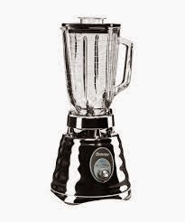

EJEMPLO DE MENÚ DESPLEGABLE
 Operadores eléctricos son los que consiguen convertir en luz toda la corriente eléctrica que les llega, sin perder, como las bombillas incandescentes, una parte en forma de calor. Son materiales cuya resistencia al paso de la electricidad es muy baja.
CORRIENTE ELECTRICA
Se define la corriente eléctrica como un desplazamiento de electrones portadores de carga eléctrica a lo largo de un conductor entre cuyos extremos se aplica una diferencia de potencial. Este transporte puede ser de dos tipos: corriente de cargas positivas o corriente de cargas negativas. El fenómeno físico del flujo de electrones en un conductor es análogo al flujo de un líquido por el interior de una tubería entre cuyos extremos existe una diferencia de presión, debida, por ejemplo, a una diferencia de nivel.
Qué tipos de corrientes eléctricas:
La corriente eléctrica se puede clasificar según su naturaleza en:
Corriente continua (CC): consiste en el desplazamiento de cargas eléctricas que no modifican su sentido de circulación con el paso del tiempo.
Corriente alterna (CA): el sentido y dirección de la corriente varía de forma cíclica, siendo la tipología opuesta a la continua. Se trata de una corriente eficiente, por lo que es común su uso en hogares y empresas.
Corriente trifásica: consiste en tres corrientes alternas con la misma frecuencia y amplitud llamadas fases.
Corriente monofásica: este tipo de corriente se obtiene a partir de una sola fase de la corriente trifásica y un cable neutro que permite aprovechar la energía de baja tensión.
La corriente monofásica se obtiene de tomas una fase de la corriente trifásica y un cable neutro. Se encargan de la producción, distribución y consumo eléctrico en una sola fase. Este tipo de valor facilita una tensión de 230 voltios, lo que hace que sea apropiada para que pueda funcionar adecuadamente en motores eléctricos, calefacción o iluminación.
Efectos de la corriente eléctrica
Efectos caloríficos: es la corriente eléctrica que circula por un conductor, este aumenta su temperatura debido al paso de corriente. Es utilizado en estufas, hornillos, etc.
Efectos químicos: Esta vez circula por un conducto iónico, esta corriente es capaz de producir un cambio químico en el conducto.
Efectos magnéticos: Este conductor es capaz de crear un campo magnético igual que el produce un imán. Este efecto lo podemos ver en dispositivos de televisión, radio,…
Efectos lumínicos: Cuando la corriente atraviesa un filamento, se enciende una bombilla. Por ejemplo, en los tubos fluorescentes se produce la transformación de energía eléctrica en energía luminosa.
OPERADORES ELÉCTRICOS
Operadores eléctricos son los que consiguen convertir en luz toda la corriente eléctrica que les llega, sin perder, como las bombillas incandescentes, una parte en forma de calor. Son materiales cuya resistencia al paso de la electricidad es muy baja.
CORRIENTE ELECTRICA
Se define la corriente eléctrica como un desplazamiento de electrones portadores de carga eléctrica a lo largo de un conductor entre cuyos extremos se aplica una diferencia de potencial. Este transporte puede ser de dos tipos: corriente de cargas positivas o corriente de cargas negativas. El fenómeno físico del flujo de electrones en un conductor es análogo al flujo de un líquido por el interior de una tubería entre cuyos extremos existe una diferencia de presión, debida, por ejemplo, a una diferencia de nivel.
Qué tipos de corrientes eléctricas:
La corriente eléctrica se puede clasificar según su naturaleza en:
Corriente continua (CC): consiste en el desplazamiento de cargas eléctricas que no modifican su sentido de circulación con el paso del tiempo.
Corriente alterna (CA): el sentido y dirección de la corriente varía de forma cíclica, siendo la tipología opuesta a la continua. Se trata de una corriente eficiente, por lo que es común su uso en hogares y empresas.
Corriente trifásica: consiste en tres corrientes alternas con la misma frecuencia y amplitud llamadas fases.
Corriente monofásica: este tipo de corriente se obtiene a partir de una sola fase de la corriente trifásica y un cable neutro que permite aprovechar la energía de baja tensión.
La corriente monofásica se obtiene de tomas una fase de la corriente trifásica y un cable neutro. Se encargan de la producción, distribución y consumo eléctrico en una sola fase. Este tipo de valor facilita una tensión de 230 voltios, lo que hace que sea apropiada para que pueda funcionar adecuadamente en motores eléctricos, calefacción o iluminación.
Efectos de la corriente eléctrica
Efectos caloríficos: es la corriente eléctrica que circula por un conductor, este aumenta su temperatura debido al paso de corriente. Es utilizado en estufas, hornillos, etc.
Efectos químicos: Esta vez circula por un conducto iónico, esta corriente es capaz de producir un cambio químico en el conducto.
Efectos magnéticos: Este conductor es capaz de crear un campo magnético igual que el produce un imán. Este efecto lo podemos ver en dispositivos de televisión, radio,…
Efectos lumínicos: Cuando la corriente atraviesa un filamento, se enciende una bombilla. Por ejemplo, en los tubos fluorescentes se produce la transformación de energía eléctrica en energía luminosa.
OPERADORES ELÉCTRICOS
OPERADOR ELÉCTRICO: es el que consiguen convertir en luz toda la corriente eléctrica que le llega, sin perder, una parte en forma de calor, como las bombillas
 Los operadores son elementos básicos con los que se construyen circuitos, y desempeñan, por lo tanto, las funciones elementales de la electrónica y la eléctrica.
Estos elementos se clasifican en dos categorías: activos o pasivos. Entre los pasivos se incluyen los reóstatos, los condensadores y los inductores. Los considerados activos incluyen las baterías (o pilas), los generadores, los tubos de vacío y los transistores.
¿Qué son los operadores eléctricos?
También se les conoce como sistemas eléctricos. Es un conjunto de elementos dinámicamente relacionados, que permiten generar, conducir y recibir corriente eléctrica. Como por ejemplo un interruptor o un bombillo. Si un sistema utiliza energía eléctrica, circula por éste corriente eléctrica. En todo sistema eléctrico hay una fuente de energía, un elemento que provee de energía al sistema, por ejemplo las pilas o las baterías, o los enchufes conectados a la red eléctrica.
TIPOS DE OPERADORES ELECTRICOS:
1. Los que trabajan con electricidad (Conectados a la red eléctrica):
Los operadores son elementos básicos con los que se construyen circuitos, y desempeñan, por lo tanto, las funciones elementales de la electrónica y la eléctrica.
Estos elementos se clasifican en dos categorías: activos o pasivos. Entre los pasivos se incluyen los reóstatos, los condensadores y los inductores. Los considerados activos incluyen las baterías (o pilas), los generadores, los tubos de vacío y los transistores.
¿Qué son los operadores eléctricos?
También se les conoce como sistemas eléctricos. Es un conjunto de elementos dinámicamente relacionados, que permiten generar, conducir y recibir corriente eléctrica. Como por ejemplo un interruptor o un bombillo. Si un sistema utiliza energía eléctrica, circula por éste corriente eléctrica. En todo sistema eléctrico hay una fuente de energía, un elemento que provee de energía al sistema, por ejemplo las pilas o las baterías, o los enchufes conectados a la red eléctrica.
TIPOS DE OPERADORES ELECTRICOS:
1. Los que trabajan con electricidad (Conectados a la red eléctrica): 
Los que trabajan con electricidad son aquellos donde aparecen enchufes, como la nevera o el televisor, la lavadora, la licuadora, el equipo de sonido, etc 2 Los que trabajan con pilas o baterías: Estos funcionan con pilas o baterías recargables. No obstante muchos de ellos también pueden conectarse a la red eléctrica para economizar. Muchos artefactos como teléfonos celulares, cámaras digitales, portátiles, tablets, etcétera, utilizan pilas recargables.
ESTRUCTURAS ALGORITNICAS: Estructuras Algorítmicas Es un conjunto de pasos sistemáticos ordenados que me permiten hallar la solución de un problema determinado. Es importante resaltar la importancia de los algoritmos ya que a través de ellos se logra un ordenamiento de ideas. Todo algoritmo consta de tres secciones principales: Entrada: Es la introducción de datos para ser transformados. Proceso: Es el conjunto de operaciones a realizar para dar solución al problema. Salida: Son los resultados obtenidos a través del proceso. Estas estructuras se clasifican de acuerdo con su complejidad en: ESTRUCTURAS ALGORITMICAS 1. SECUENCIALES: Asignacion, Entradas y Salidas 2. CONDICIONALES: Simples y Multiples 3.
ESTRUCTURAS SECUENCIALES: La estructura secuencial es aquella en la que una acción (instrucción) sigue a otra en secuencia. Las tareas se suceden de tal modo que la salida de una es la entrada de la siguiente y así sucesivamente hasta el fin del proceso. La estructura secuencial es la más sencilla de todas, simplemente indica al procesador que debe ejecutar de forma consecutiva una lista de acciones (que pueden ser, a su vez, otras estructuras de control); para construir una secuencia de acciones basta con escribir cada acción en una linea diferente. Dependiendo de como se obtengan las funciones de salida, los sistemas secuenciales pueden tener dos estructuras denominadas Máquina de Moore y Máquina de Meal ESTRUCTURAS REPETITIVAS: Las estructuras repetitivas, permiten repetir una acción (o grupo de acciones) varias veces. Existen tres tipos de estructuras repetitivas: mientras, desde-hasta y repetir-hasta. Las estructuras de control repetitivas utilizan dos tipos de variables. VIDEOS RELACIONADOS CON LOS TEMAS: